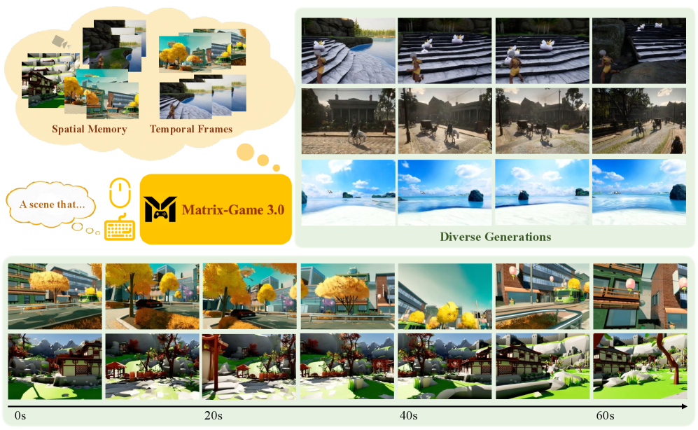
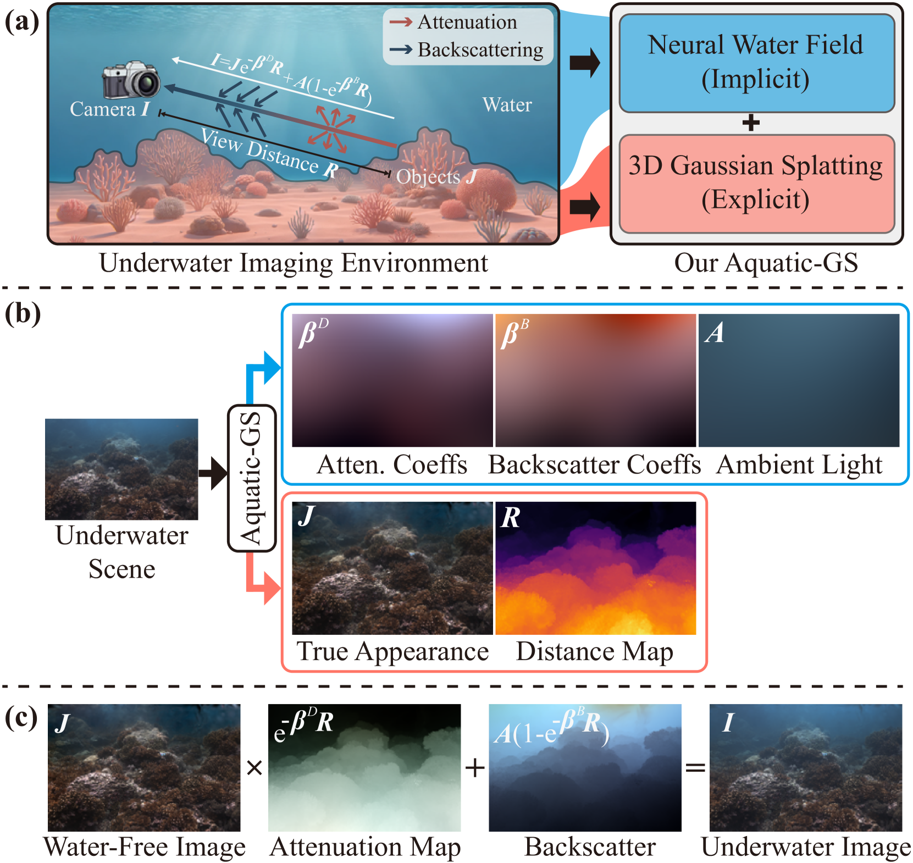
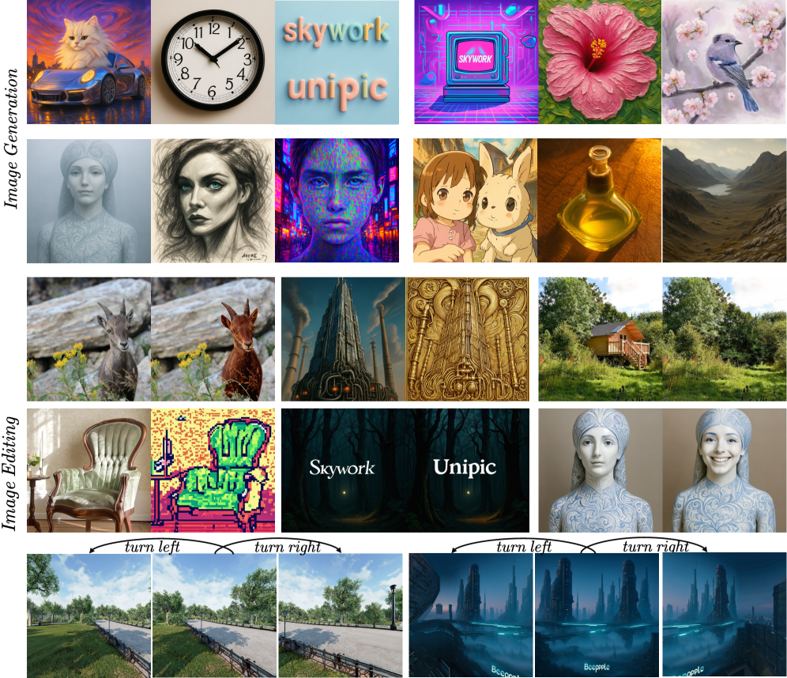
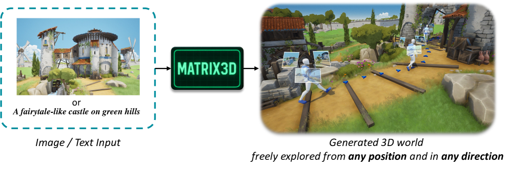
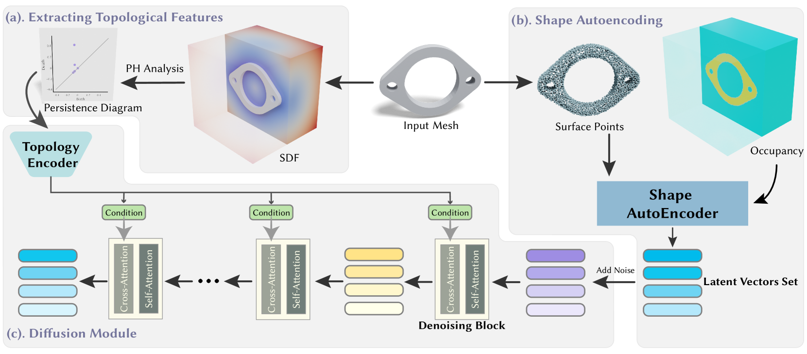
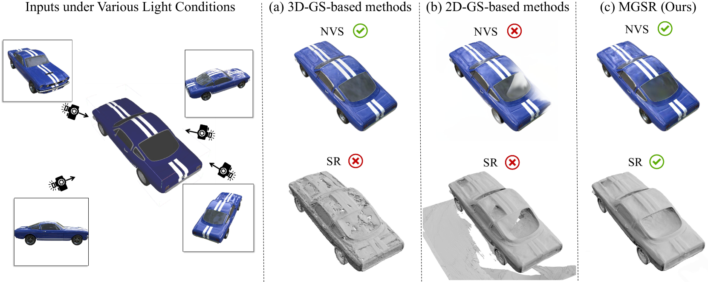
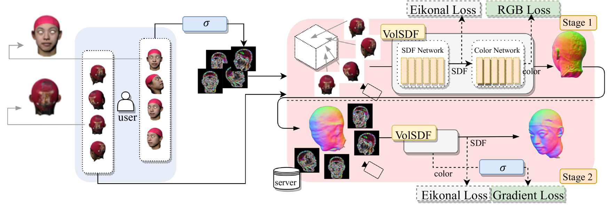
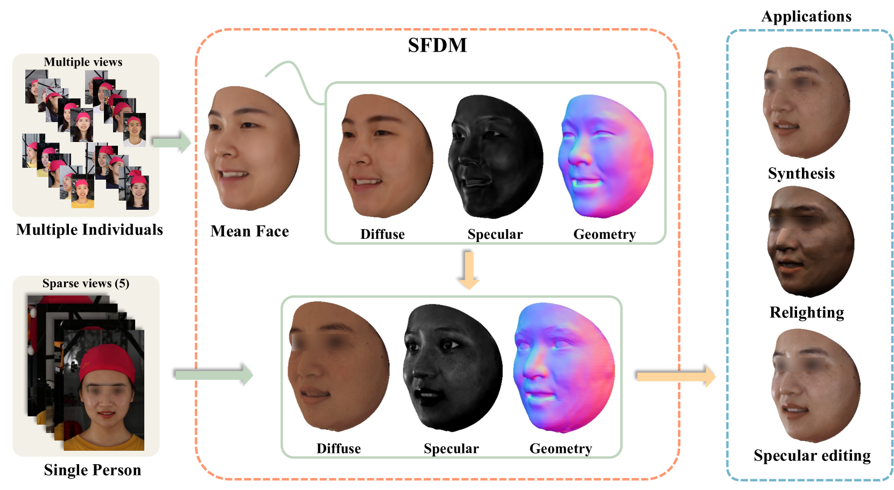

I am a Ph.D. student at the School of Computer Science and Engineering, Nanyang Technological
University, advised by Prof. Ying He. My research sits
at the intersection of computer vision and computer graphics, with a recent focus on 3D
reconstruction, neural rendering, 3D generation, and interactive world models.
Before joining NTU, I received my B.S. degree in Computer Science from Huazhong University of
Science and Technology in 2022. During my Ph.D. at NTU, I have been working closely with Dr.
Jiangbei Hu. I also spent
time as a research intern at SenseTime Research and Shanghai AI
Laboratory, working with Dr. Kwan-Yee Lin, and at
Skywork AI, mentored by Dr. Yangguang Li.
Reconstruct geometry, generate worlds, and make them editable.
I am interested in building 3D-aware visual systems that can reconstruct, edit, and generate
high-quality geometry and immersive environments from sparse or multimodal inputs.

Matrix-Game 3.0: Real-Time and Streaming Interactive World Model with
Long-Horizon Memory
Zile Wang*, Zexiang Liu*, Jiaxing Li*, Kaichen Huang*, Baixin Xu*, Fei Kang, Mengyin
An, Peiyu Wang, Biao Jiang, Yichen Wei, Yidan Xietian, Jiangbo Pei, Liang Hu, Boyi Jiang, Hua Xue,
Zidong Wang, Haofeng Sun, Wei Li, Wanli Ouyang, Xianglong He, Yang Liu, Yangguang Li, Yahui Zhou
arXiv, 2026
arXiv
/
project page
/
code

AquaSplatting: A Hybrid 3D Representation for Robust Underwater Scene
Reconstruction via Dual-Branch Rendering
Jiangbei Hu, Haobo Wang, Baixin Xu, Nan Ding, Zhimao Lu, Na Lei, Ying He
AAAI, 2026
Matrix-Game 2.0: An Open-Source Real-Time and Streaming Interactive World
Model
Xianglong He, Chunli Peng, Zexiang Liu, Boyang Wang, Yifan Zhang, Qi Cui, Fei Kang, Biao Jiang,
Mengyin An, Yangyang Ren, Baixin Xu, Hao-Xiang Guo, Kaixiong Gong, Size Wu, Wei Li,
Xuchen Song, Yang Liu, Yangguang Li, Yahui Zhou
arXiv, 2025
arXiv
/
project page

Skywork UniPic 2.0: Building Kontext Model with Online RL for Unified
Multimodal Model
Hongyang Wei*, Baixin Xu*, Hongbo Liu*, Size Wu, Jie Liu, Yi Peng, Peiyu Wang,
Zexiang Liu, Jingwen He, Yidan Xietian, Chuanxin Tang, Zidong Wang, Yichen Wei, Liang Hu, Boyi Jiang,
Wei Li, Ying He, Yang Liu, Xuchen Song, Yangguang Li, Yahui Zhou
arXiv, 2025
arXiv

Matrix-3D: Omnidirectional Explorable 3D World Generation
Zhongqi Yang, Wenhang Ge, Yuqi Li, Jiaqi Chen, Haoyuan Li, Mengyin An, Fei Kang, Hua Xue,
Baixin Xu, Yuyang Yin, Eric Li, Yang Liu, Yikai Wang, Hao-Xiang Guo, Yahui Zhou
arXiv, 2025
arXiv
/
project page
/
code

TopoGen: Topology-Aware 3D Generation with Persistence Points
Jiangbei Hu, Ben Fei, Baixin Xu, Fei Hou, Shengfa Wang, Na Lei, Weidong Yang, Chen
Qian, Ying He
Computer Graphics Forum (Pacific Graphics), 2025
paper

MGSR: 2D/3D Mutual-Boosted Gaussian Splatting for High-Fidelity Surface
Reconstruction under Various Light Conditions
Qingyuan Zhou, Yuehu Gong, Weidong Yang, Jiaze Li, Yeqi Luo, Baixin Xu, Shuhao Li,
Ben Fei, Ying He
ICCV, 2025
arXiv

Do Not Deepfake Me: Privacy-Preserving Neural 3D Head Reconstruction without
Sensitive Images
Jiayi Kong, Xurui Song, Shuo Huai, Baixin Xu, Jun Luo, Ying He
AAAI, 2025
arXiv

SFDM: Robust Decomposition of Geometry and Reflectance for Realistic Face
Rendering from Sparse-view Images
Daisheng Jin, Jiangbei Hu, Baixin Xu, Yuxin Dai, Chen Qian, Ying He
CVPR, 2025
paper
/
project page
/
code
{kind=link}